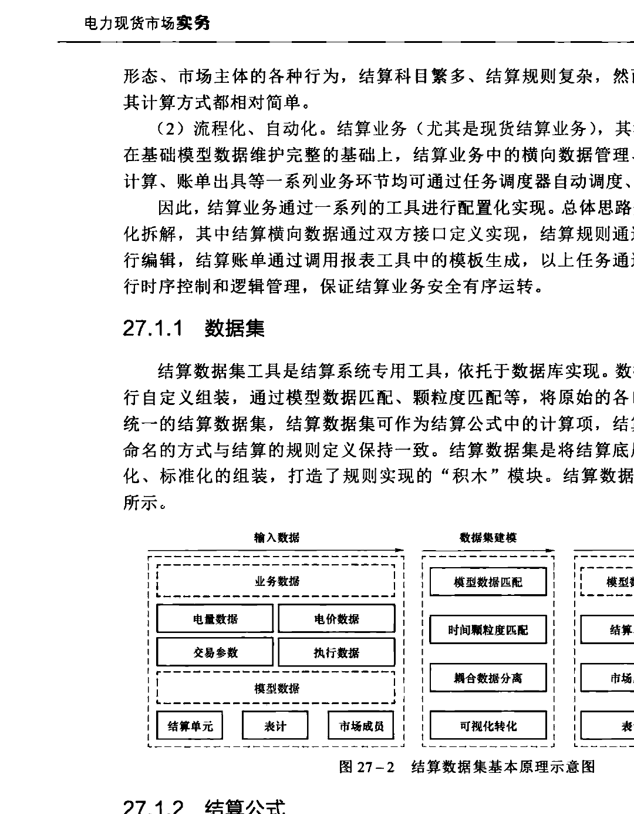
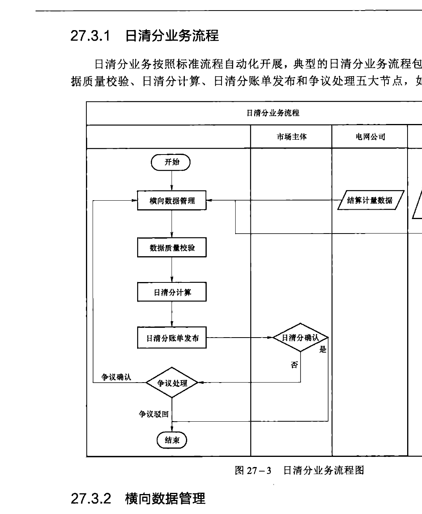
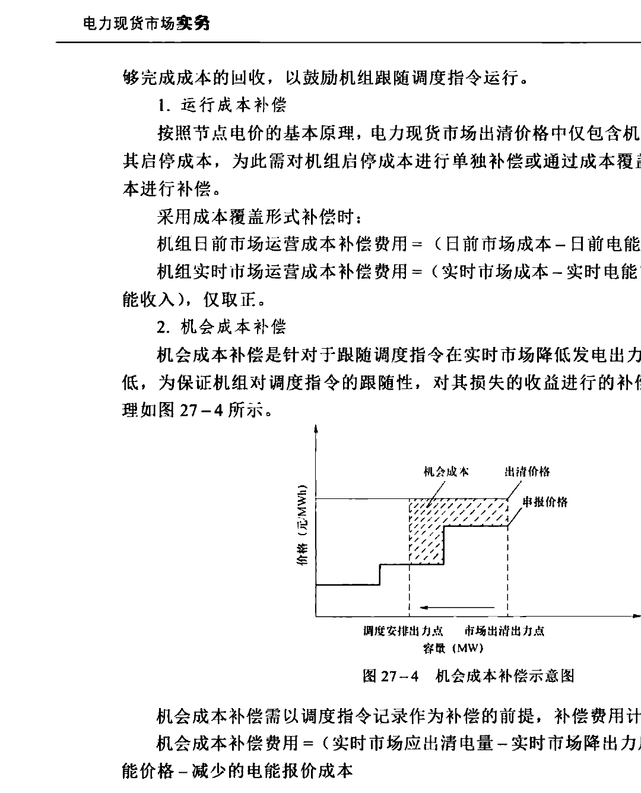
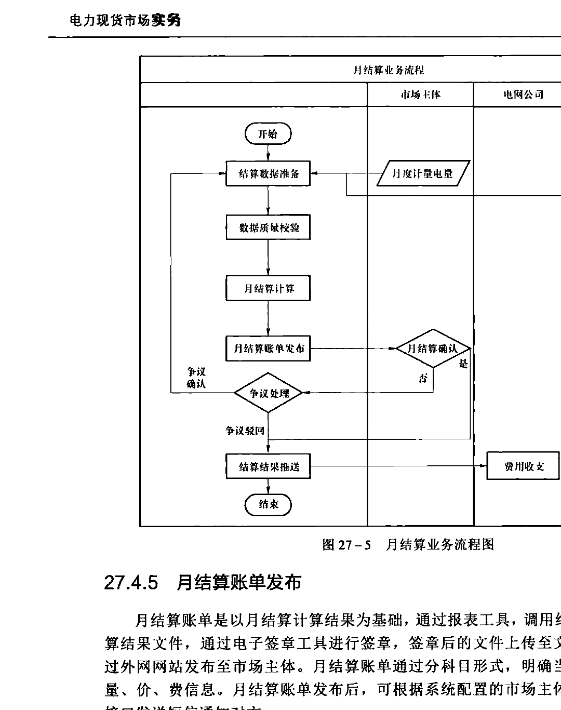
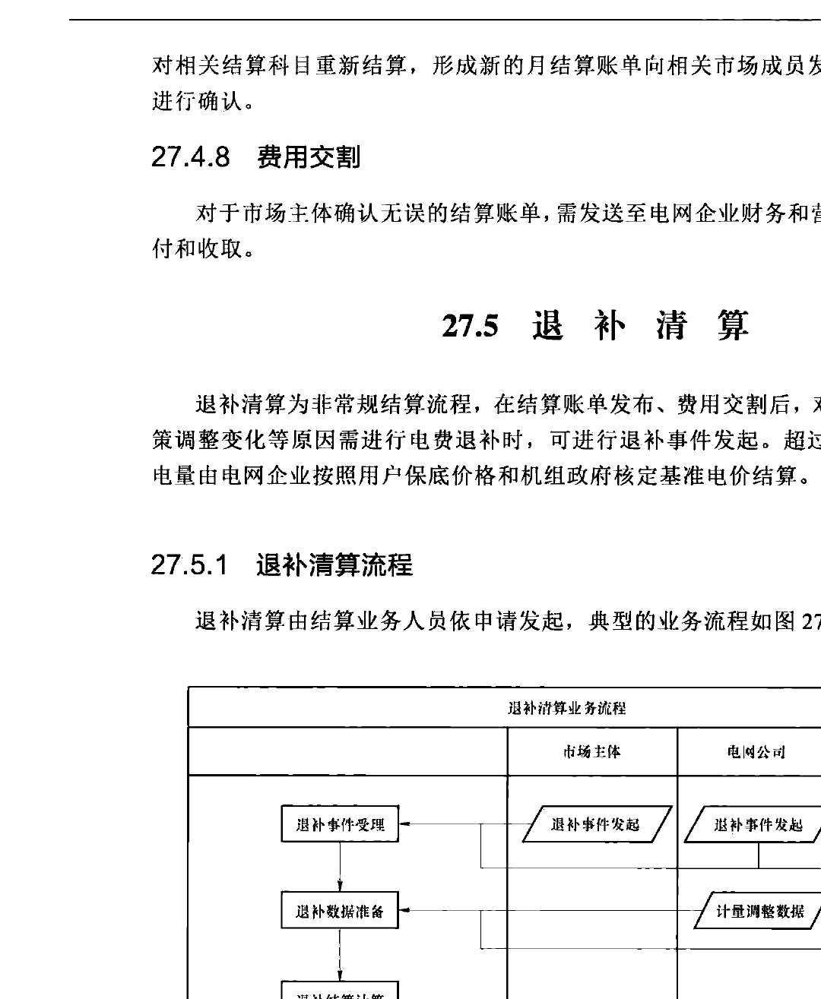

形态、市场主体的各种行为，结算科目繁多、结算规则复杂，然而针对每一个具体规则其计算方式相对简单。
（2）流程化，自动化。结算业务（尤其是现货结算业务），其流程已经相对标准化，在基础模型数据推演完整的基础上，结算业务的横向数据管理、数据质量校验、结算计算、账单生成等一系列业务环节可通过任务调度自动调度，按时间触发执行。因此，结算业务通过一系列的工具进行配置化实现。总体思路是将结算业务进行原子化拆解，其中结算横向数据通过双方接口定义实现，结算规则通过专业结算公式工具进行编辑，结算账单通过调用报表工具中的模板实现，以上任务通过统一的任务调度进行时序控制和逻辑管理，保证结算业务安全有序运转。
27.1.1 数据集
结算数据集工具是结算系统专用工具，依托于数据库实现。数据集对结算输入数据进行自定义组装，通过模型数据匹配、颗粒度匹配等，将原始的各口径数据组合成为标准统一的结算数据集。结算数据集可作为结算公式中的计算源，结算数据集名称可通过命名的方式与结算的规则定义保持一致。结算数据集是将结算底层数据进行了一次可视化、标准化的组装，打造了规则实现的"积木"模块。结算数据集基本原理如图27-2所示。

| 输入数据 | 数据集编辑 | 输出数据 |
|---|---|---|
| 业务数据 | 模型数据匹配 | 模型数据 |
| 电量数据 | 时间颗粒度匹配 | 结算单元 |
| 电价数据 | 角色数据分离 | 市场成员 |
| 交易参数 | 可视化转化 | |
| 履约数据 |
27.1.2 结算公式
结算公式工具以结算数据集为基础，提供求和、求最大、求最小、求平均值、四舍五入函数等自定义函数和算法，支持if、switch等逻辑判断条件，进行结算规则的实现。结算公式中的计算项可重复引用，结算公式工具提供图形化配置界面。
27.1.3 报表工具
报表工具一般由第三方提供，当前技术已经比较成熟，可通过灵活快捷的定义实现对系统数据可视化和分析。可提供定制结算单模板，调用结算单模板后报表自动获取系统数据并形成结算单文件。
27.1.4 短信平台
短信平台提供与电信运营商的系统接口，支持向运营商服务器发送短信群发请求，可将结算信息及时以短信形式发送至市场主体，提醒市场主体进行结算确认。
27.1.5 任务调度器
任务调度器支持按照自定义设定的规则和逻辑创建相应业务任务的需求，实现了在特定的时间满足特定的条件时执行特定业务逻辑的功能。任务调度基于事件驱动，将所有可能影响一个任务启动的条件都当作一个事件进行管理和监控；配置每个任务的依赖条件，若依赖条件满足，则发起一个任务到任务调度控制表中，开始执行这个任务。
对于结算横向数据接入、结算计算公式、账单生成、账单发布等均可定义为一项任务，通过任务调度器按时触发实现业务的自动化流转。对于顺序执行的结算任务，可通过串联成为任务链一次性触发。
27.1.6 文件服务器
文件服务器提供文件的集中存储、精确的权限控制功能，对于结算账单、市场成员的档案信息等，通过文件服务器进行本地存储和安全管理。
27.2 基础模型数据管理
结算业务开展之前，需对结算所需要的基础模型和配置信息进行维护和管理。该部分工作不属于日常结算业务，仅当有变更时才需进行操作，包括结算单元管理、表计模型管理、结算科目管理、基础电价管理、基础数据管理等。支持对基础模型的增、删、改、查操作，支持根据调度关系、类型等属性查询基础模型信息。
27.2.1 结算单元管理
结算单元是结算的基本业务单元，它由同一市场成员下一个或多个发电侧机组或用电侧计量点进行自由组合形成。结算单元的关键信息包括名称、编码、所属市场成员、所关联的机组/计量点，需要支持其他信息的扩展。结算单元处于市场成员和机组/计量点之间的中间层，电力现货市场中发电侧结算单元与参与市场的经济机组一一对应，用电侧一般根据计量点的电压等级进行结算单元定义。
针对结算单元的操作有新建、删除、编辑、单次、失效。但是对于已经产生业务数据的结算单元，不允许删除，不允许编辑，允许失效。对于创建后未产生业务数据的结算单元，可以删除，可以编辑，可以失效。针对结算单元的所有操作都需要有日志记录，包括操作内容、操作时间、操作人等必要信息。
27.2.2 表计模型管理
表计是电网数据采集的基本设备，承担着原始电能数据采集、计量和传输的任务。发电侧机组上网电量和用电侧计量点电量均依据表计底码值进行数学计算得到。表计模型信息包括表计全称、表计简称、表计总倍率、生效时间、失效时间、所属厂站、表计电量类型等。
针对每一表计模型支持表计事件的管理，包括表计自动满码处理、名称变更、表计总倍率变更（TA、TV变更）或者表计名称与总倍率同时变更。关口表计发生变化，包括表计标识变更、表计总倍率变更时，将进行变更管理，变更管理主要进行变更前、后的表计基本信息管理。
27.2.3 结算科目管理
结算科目类型主要描述了结算电量电费类型，初始科目类型来源于交易和合同模块，结算可从交易和合同类型中抽取，包括编码、ID、名称等。结算可增加、修改、删除科目信息，科目信息用于对结算结果的电量、电价、电费进行分类归纳，最终在结算账单和统计分析中体现。
结算科目采用二级编码形式，一级编码标识科目所属的大类，如电能、环保等；二级编码标识具体结算业务，如基数合约电能、双边合约电能、脱硫、脱硝、超低排放等。科目编码管理包括科目编码的增加、删除、修改、查询。
27.2.4 基础电价管理
基础电价管理包括机组批复电价、环保电价（脱硫、脱销、除尘、超低排放等）、电力用户的目录电价、输配电价等信息以及电网公司的标杆电价、清洁能源补贴电价等。基础电价以增量更新的形式维护，电价设置生效、失效时间，保证结算的可追溯性。
27.2.5 基础数据管理
基础数据包括基础容量电费信息、税率信息、基础参数等。容量电费针对当前实行两部制电价的发电企业，需维护其容量电费信息。税率信息针对各机组、电力用户和售电公司分别维护。基础参数包括考核阈值、结算优先级等。
27.3 日清分
日清分是依据电力现货市场每日出清结果、计量电量等数据，分科目对市场主体每日的费用进行清算，形成结算单据并发送至市场主体，便于市场主体及时了解市场收益情况，日清分结果仅记录不实际支付。
27.3.1 日清分业务流程
日清分业务按照标准流程自动化开展，典型的日清分业务流程包括横向数据管理、数据质量校验、日清分计算、日清分账单发布和争议处理五大节点，如图27-3所示。

27.3.2 横向数据管理
结算业务的开展依赖于横向系统传入的数据，数据源包括调度、营销、交易等多个部门，数据维度包括了发电侧和用电侧，交易出清、交易执行以及发用电计量，数据的时间颗粒度为小于等于一个结算周期。与横向系统之间的数据交互一般采用接口方式实现，以手动或自动触发的方式定时获取。根据每个市场结算规则的不同，结算所需数据以及数据交互频率有所不同，典型的电力现货市场日清分结算所需数据明细如表27-1所示。
| 数据项 | 数据源端 | 交互频率 |
|---|---|---|
| 日前电能市场出清结果 | 现货系统 | 按日 |
| 实时电能市场出清结果 | 现货系统 | 按日 |
续表
| 数据项 | 数据源端 | 交互频率 |
|---|---|---|
| 备用出清结果 | 现货系统 | 按日 |
| 调频出清结果 | 现货系统 | 按日 |
| 调频执行结果 | 调度系统 | 按日 |
| 机组启动报价 | 现货系统 | 按需 |
| 机组启停次数 | 现货系统 | 按需 |
| 机组空载报价 | 现货系统 | 按需 |
| 机组电能报价 | 现货系统 | 按需 |
| 特殊机组标识 | 调度系统 | 按需 |
| 机组检修、非计划停运信息 | 现货系统 | 按需 |
| 机组补偿标识 | 现货系统 | 按需 |
| 机组考核数据 | 现货系统 | 按需 |
| 中长期交易出清结果 | 中长期交易系统 | 按日 |
| 机组上网电量 | 电能量计量系统 | 按日 |
| 市场化用户计量电量 | 用电采集系统 | 按日 |
| 售电公司计量电量 | 用电采集系统 | 按日 |
27.3.3 数据质量校验
为保证结算业务的有序运转，需通过自动化手段对结算数据进行校核，一般包括及时性、完整性、一致性和合理性的校核。及时性校核用于对未按照规定时间节点接入的数据进行告警；完整性校核用以校核数据有无缺点、漏点；一致性校核需与数据发送方共同制定校核规则，以数据的整体求和值或者逻辑编码值作为校核的依据，以保证数据收发双方一致，数据通信过程中无数量、精度丢失；合理性校核是对数据逻辑有效性的校核，例如对发电机组出力与额定容量的合理性校核等。当校验结果超出一定阈值时，结算系统应提示或告警。
27.3.4 日清分计算
电力现货市场的日清分一般包括电能量日清分、辅助服务日清分、成本补偿日清分和不平衡资金的日清分。
27.3.4.1 电能量日清分
电能量日清分包含日前市场、实时市场、合约市场（中长期合约、基数合约等）的电量电费计算。按照结算模式划分，电能量日清分分为差价模式和差量模式：
1. 差价模式
日前市场电费按照日前市场的出清电量和出清电价结算；实时市场电费按照实际计量
电量和日前出清电量的差值按实时出清电价来结算；中长期合约电费按照合约结算电量以及合约电价与参考节点电价的差值进行结算。其中，基数合约的结算电量可以采用"以用定发"的方式进行计算，也可以直接等于基合约的分解曲线数据，参考节点电价一般为日前市场的节点电价，部分规则下等于实时市场的节点电价或其他电价。
2. 差量式
差量式采用合约市场优先结算，基合约和市场化中长期合约电费按照合约电价和量结算，日前市场按照日前出清电价和基合约的分解曲线数据，中长期合约电费按照合约电价和量结算，日前市场按照日前出清电价和基合约的分解曲线数据的差值与日前出清电价来结算，实时市场电费按照实际计量电量扣减日前出清电量的差值与实时出清电价来结算。
27.3.4.2 辅助服务日清分
辅助服务日清分主要包含调频日清分和备用日清分。
1. 调频日清分
调频费用包括调频容量费用、调频里程费用和调频机会成本费用三个部分。
其中，调频容量费用是对调频资源调节容量的补偿费用，调频里程费用是针对调节资源实际上下调节的执行补偿费用。
调频容量费用根据机组在调频市场中的标明的调频容量、调频市场的容量出清价格以及机组调频性能归一化得分系数$k$计算，即
调频里程费用根据机组在一个结算周期内的实际响应里程、调频市场的里程出清价格以及机组调频性能归一化得分系数$k$计算，即
机组调频性能归一化得分系数$k$与调频机组的调频指令执行的精度、延迟性以及机组调节速率有关。
调频机组机会成本费用是针对参与电能市场报价的机组由于提供调频服务而在电能市场损失的收益，减少或未收益等于调频资源在结算周期内电能市场上的损失收益，减去调频容量费用和里程费用，即
2. 备用日清分
备用费用包含日前市场备用费用和实时市场备用费用。其中，日前市场备用费用按照不同结算时段的日前市场备用价格和日前市场备用出清量计算，实时市场备用费用按照不同结算时段的实时市场备用价格和实时市场备用出清量与备用缺额的差值计算。
27.3.4.3 成本补偿日清分
成本补偿包括运行成本补偿和机会成本补偿，成本补偿是为了保证参与市场的机组能够
够完成成本的回收，以鼓励机组跟随调度指令运行。
1. 运行成本补偿
按照节点电价的基本原理，电力现货市场出清价格中仅包含机组的运行成本，未包含其启停成本，为此需对机组启停成本进行单独补偿或通过成本覆盖的形式对机组整体成本进行补偿。
采用成本覆盖形式补偿时：
机组日前市场运营成本补偿费用=（日前市场成本－日前电能市场收入），仅收正。
机组实时市场运营成本补偿费用=（实时市场成本－实时电能市场收入－日前市场电能收入），仅收正。
2. 机会成本补偿
机会成本补偿是针对于跟随调度指令在实时市场降低发电出力，导致其可盈利费用降低，为保证机组对调度指令的跟随性，对其损失的收益进行的补偿，机会成本补偿的原理如图27-4所示。

机会成本补偿需以调度指令记录作为补偿的前提，补偿费用计算公式如下：
27.3.4.4 不平衡资金日清分
对于电网企业代理购电中，电力现货市场价格与代购电价格偏差等导致的不平衡资金，需按日清分。
27.3.5 日清分账单发布
日清分账单是以日清分结果为基础，通过报表工具，调用结算单模板形成的日清分结果文件，文件上传至文件服务器存储，并通过外网网站发布至市场主体。日清分账单通过分科目形式，明确了当前计费周期内的结算量、价、费信息。日清分单发布后，可根据系统配置的市场主体联系人信息调用短信接口发送短信通知对方。
27.3.6 市场主体确认
结算依据发布后，市场成员需及时登录系统，下载查看结算单内容，若对结算结果无争议，可点击确认，逾期视为无异议，系统自动确认。若对结算内容有争议，可提交争议信息，争议内容可通过上传附件进行佐证。
27.3.7 日清分争议处理
对于日清分争议信息，需对相关数据进行进一步的确认，当发生影响结算的数据调整时，对相关结算科目应重新进行日清分计算，形成新的日清分结算账单向相关市场成员发布，并通知市场成员进行确认。
27.4 月结算
月结算依据月度结算基础数据、月内日清分结果数据等，分科目对市场主体月度费用进行结算，形成科目完整的结算结果并以结算单形式发送至市场主体，月结算结果用以指导实际费用交割。
27.4.1 月结算业务流程
月结算业务按照流程主要包括结算数据准备、数据质量校验、月结算计算、月结算账单发布、市场主体确认、月结算争议处理、费用收支七大节点，月结算业务流程如图27-5所示。
27.4.2 结算数据准备
月度结算时，需市场主体上传月度表计底码或月度表计电量，作为最终结算的依据；需接入调度结构两个细则结算结果；需接入省间市场结算结果作为结算边界。
27.4.3 数据质量校验
月度结算时的数据质量校验与日清分有所不同，月度计算数据通常更关心数据的及时率和完整性。例如：对于市场主体上传的月度表计电量，需及时统计数据上传率，并对数据的完整性进行校验，对于未及时上传或数据缺失的市场主体，结算系统应提示或告警。
27.4.4 月结算计算
月结算计算包括日清分汇总计算和月清分结算。
日清分汇总对上月电能交易、辅助服务交易、偏差考核费用、市场补偿、分摊费用等科目日清分结果进行汇总，得到日清分汇总结果。
月清分结算对辅助服务、成本补偿、不平衡资金等进行月度分摊；对月内分时计量电量与月度计量电量的偏差进行调平结算；对容量费用、环保费用等进行月清分计算。

27.4.5 月结算账单发布
月结算账单是以月结算计算结果为基础，通过报表工具，调用结算单模板形成月度结算结果文件，通过电子签章工具进行签章，签章后的文件上传至文件服务器存储，并通过外网网站发布至市场主体。月结算账单通过分科目形式，明确当前计费周期内的结算量、价、费信息。月结算账单发布后，可根据系统配置的市场主体联系人信息调用短信接口发送短信通知对方。
27.4.6 市场主体确认
结算账单发布后，市场成员需及时登录系统，下载查看结算单内容，若对结算结果无争议，可点击确认，逾期视为无异议，系统自动确认。若对结算内容有争议，可提交争议信息，争议内容可通过上传附件进行佐证。
27.4.7 月结算争议处理
对于市场主体的月度结算争议，需及时处理和回复，当发生影响结算的数据调整时，
对相关结算科目重新结算，形成新的月结算账单向相关市场成员发布，并通知市场成员进行确认。
27.4.8 费用交割
对于市场主体确认无误的结算账单，需发送至电网企业财务和营销部门进行费用的支付和收取。
27.5 退补清算
退补清算为非常规结算流程，在结算账单发布、费用交割后，对于结算数据差错、政策调整变化等原因需进行电费退补时，可进行退补事件发起。超过退补期的，计量差错电量由电网企业按照用户保底价格和机组政府核定基准电价结算。
27.5.1 退补清算流程
退补清算由结算业务人员依申请发起，典型的业务流程如图27-6所示。

27.5.2 退补事件发起
退补事件可由电网企业、电网调度机构、市场成员等发起，需通过书面方式提出退补申请，退补申请中应明确具体的退补主体、时间、业务，进行退补事件发起。
27.5.3 退补数据准备
在退补事件确认后，结算系统通过手动录入或接口形式将调整后的数据电量、电价数据进行管理。
27.5.4 退补结算计算
结算系统根据调整后的结算数据或政策调整后的结算规则，对历史月份、日费用进行重新计算，重新结算时生成的结果不影响历史月份、日已完成的结算结果，重新结算结果与历史结算结果的差额部分作为退补费用。
27.5.5 退补结果发布
退补结果可以单独的退补结算账单进行发布，或者并入次月月度结算账单中发布。
27.6 本章小结
本章对实现电力市场结算业务所依赖的一系列工具进行了原理阐述，对结算业务基础模型和基础数据进行了具体介绍，由此对电力现货市场日清分、月结算、退补清算三大业务流程进行了详细描述，明晰了结算的业务品种、功能时序和数据功能要求。
第28章 模拟仿真
电力现货市场与电力系统发电、输电、用电等环节密切相关，并且与调度运行环节密不可分，受电网结构、供需形势、外部环境等多种因素的共同影响，其市场设计与市场运营均较为复杂，仅仅通过理论分析很难预估市场的运行效果。电力现货市场模拟仿真是电力市场领域的重要研究方法，国际上开展电力市场化改革的主要国家均开展了相关研究，先后建立了多种电力市场仿真软件平台，为电力市场的原理分析、规则制定、培训演练、风险预警等提供了重要的技术参考和辅助支撑。本章分为6个部分，首先简要介绍了电力现货市场模拟仿真系统概况，然后按照模拟仿真的业务顺序先后介绍了仿真场景设置、市场成员报价仿真、市场出清计算仿真、基于市场出清结果的电网调度运行仿真以及仿真结果分析5项仿真系统主要功能。
28.1 电力现货市场运营模拟仿真系统概况
电力现货市场运营模拟仿真系统是针对电力现货市场运营过程进行仿真验证的技术系统，其主要作用是验证电力现货市场的运营效果、分析市场潜在风险，辅助电力现货市场设计和规则制定，降低市场改革的试错成本。电力现货市场运营模拟仿真系统与电力市场技术支持系统在功能方面存在一定的相似性，但由于模拟仿真系统需要支持多种的模式、规则下的电力现货市场仿真分析，因此相较于电力现货市场技术支持系统，模拟仿真系统的灵活性、扩展性更高，并且为反映电力市场与电网之间的闭环影响关系，仿真系统往往需要对多种场景下电力现货市场运营以及基于市场出清结果的电网调度运行的联合过程进行仿真验证分析。总体而言，电力现货市场运营模拟仿真系统的主要功能包括仿真场景设置、市场成员竞价代理、市场运营过程仿真、电网调度运行仿真、仿真结果分析等。
28.1.1 电力现货市场运营模拟仿真的必要性
电力现货市场模拟仿真是电力现货市场设计和规则制定的重要辅助手段。考虑到不同地区的电源结构、电网特点以及电力市场改革发展的差异性，电力现货市场的模式与规则设计的合理性和适用性对于电网的安全性、市场运营的稳定性、市场风险，以及市场成员